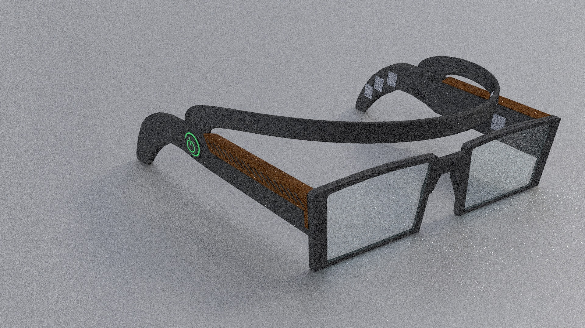
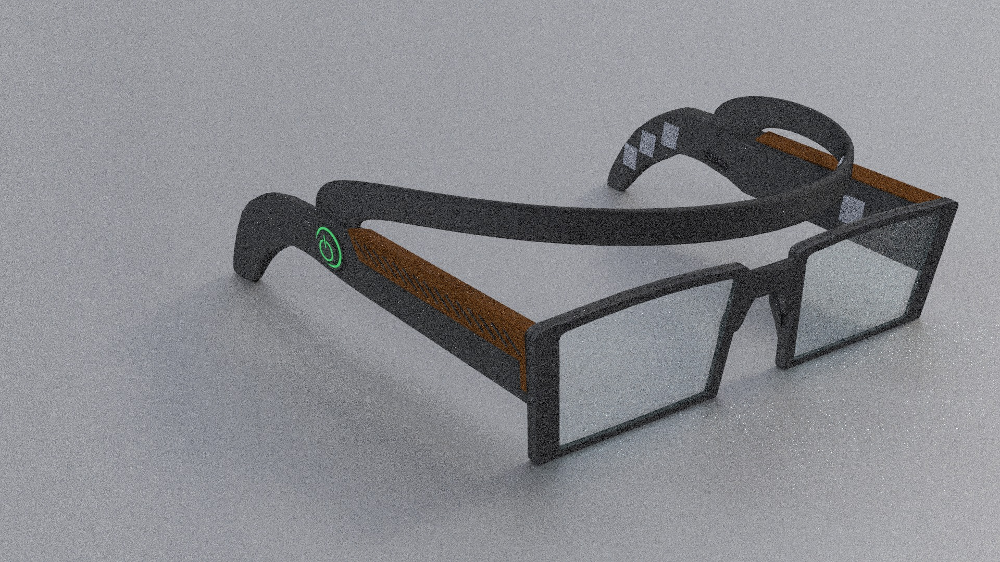

PRODUCT VERSIONS
[Concept sketches]
 

[Final concept]

THEORETICAL FRAMEWORK The researchers did not yet agree on a general definition of aging, because it is not a constant phenomenon that occurred in the latter stages of a person's life, but it is a period of the life stages in which the human reaches it after the age of sixty five, so it is a vital natural process affected by lifestyle, environmental factors, and genetics factors. Someone defined aging as continuing operation and progressive where the knowledge system and cognitive and kinetic take on declining gradually, and he divided it into three related age groups: ➢ Middle-old stage: It extends from the age of 65-70 years, shows the group of retired people who have increasingly leisure. ➢ Old-Old stage: It extends from the age of 75 years and older, individuals here characterized by weak health and Infected.